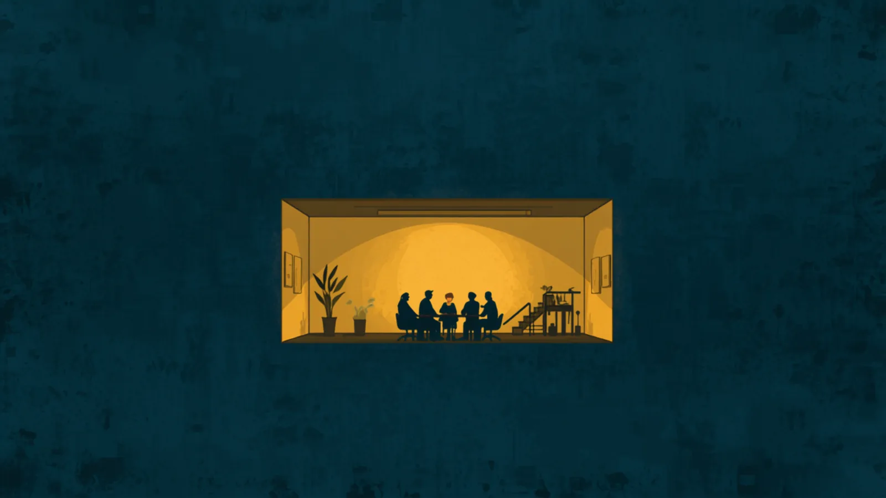
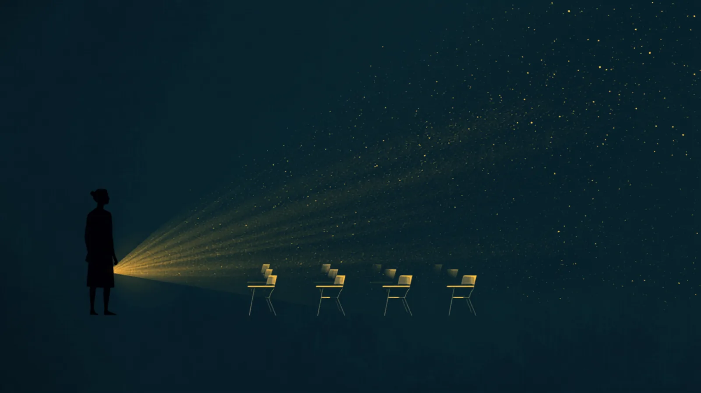
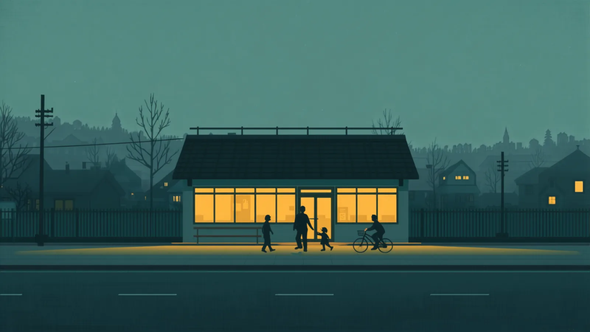
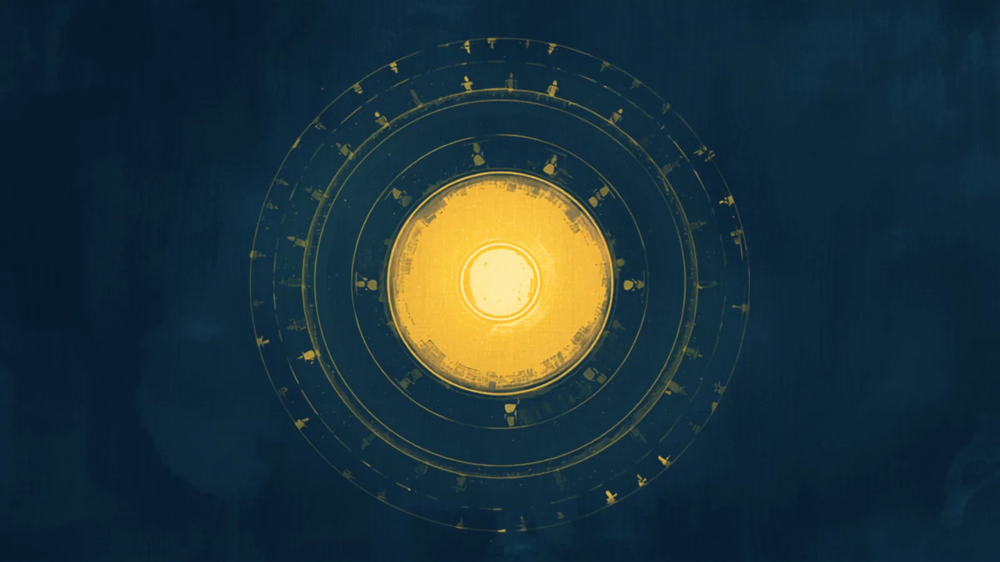

戦略編の地図は、世界から足元へ降りてくる地図でした。
この地図は逆向きです。今日の会議室、職員室、コミュニティセンター——
いちばん身近な場所から、平和が外へ育っていく道すじを描きます。
戦略編は、平和がなぜ認知と対話の問題なのかを描きました。実践編は、そのために世界が発明してきた技法を集めました。ただ、地図と道具だけでは歩き出せません。どの場所で、誰から始めるのか——それがこの展開編の問いです。
戦争の最小単位は一つの認知。世界の現在地とノーベル平和賞125年の系譜から、平和への戦略を描く。
対立を暴力ではなく対話で代謝するために発明された技法・仕組み・運動を、エビデンス水準つきで収載。
個人・職場・学校・地域・制度。5つの層を年輪のように育てる、いちばん身近な場所からの展開図。
「反論を最後まで聞ける」「沈黙に耐えられる」「意見と人格を切り分けられる」。積極的平和は、こうした身体レベルの能力から始まります。デモクラシーフィットネスが「筋トレ」と呼ぶのはこのためです。思想ではなく筋肉なので、誰でも、何歳からでも鍛えられます。
会議で最後まで人の話を聞けた回数。意見が違う人に「わからず屋だ」と思わず、問いを返せた回数。数えられるほど小さく、確かな変化です。

日本の大人にとって、職場は事実上の市民広場です。会議・1on1・フィードバックは、毎日開かれている対話の練習場でもあります。ただし対話不全の多くは個人の資質ではなく構造の問題として現れます。だからこの層では、研修の前に診断を置きます——「本当に対話力の問題なのか、それとも仕組みの問題なのか」。
会議で反対意見が出る回数（心理的安全性の実測値）。「あの人が悪い」が「この仕組みのどこが詰まっている？」に置き換わる頻度。

教員は、この地図で最も増幅率の高い存在です。一人の教員が対話の筋肉を得れば、その教室の数十人、教員人生では数百〜数千人の子どもが「意見が違っても敵ではない」経験を積みます。まず教員向けの体験と研修から入り、次に教員と一緒に子ども向けの授業を共同設計する——研修で終わらせず、教室に届くまでを設計します。
職員会議での発言の分布（特定の人だけが話していないか）。学級会で少数意見が最後まで聞かれた回数。教員自身の「言えなさ」の減少。

日本には公民館——近ごろはコミュニティセンターや生涯学習センターとも呼ばれます——という、成人の学びと自治のための施設が全国に張りめぐらされています。これはデンマークのフォルケホイスコーレと同じ「民衆の学びが民主主義を支える」という系譜にある、世界的にも珍しいインフラです。ここでDF体験会や小さな熟議の場を開ければ、制度に頼らない市民の対話の場が、すでにある建物の上に載ります。
「講座を聞きに来る場」から「話しに来る場」への転換。世代の違う参加者が同じテーブルにつく回数。常連以外の新しい顔ぶれ。

市民議会、熟議世論調査、参加型予算——世界で実証されてきた熟議の仕組みは、参加する市民に一定の対話の体力があるほど機能します。逆に言えば、第1〜4層で筋肉が育っていれば、制度は接ぎ木できる。ここが戦略編のマクロな地図と、この足元の地図が合流する地点です。
自治体の意思決定に住民の熟議が組み込まれた事例の数。「意見公募」が「対話の場」に置き換わった回数。
5つの層は積み木ではなく、循環する生態系として設計します。二つの流れが、この地図を持続可能にします。
企業（第2層）の研修・組織開発の収益と助成金が、単体では採算の合いにくい学校・公民館（第3・4層）の活動を支えます。学校の授業料で学校を賄おうとしない——これがこの地図の経済設計です。
体験会で筋肉を得た個人（第1層）が、やがて自分の職場や地域で場を開く側に回ります。トレーナーが増えるほど、地図は一人の手を離れて育ちます。
そして学校・地域での実践事例は、企業にとっての信頼の資産として内側から外側へ還流します。お金と人と物語が逆向きに回る——年輪が太るのは、この循環が回っているときです。
年輪は一気には刻めません。おおまかな順番だけ描いておきます。
体験会と合宿で第1層の仲間を増やし、企業の対話力プログラムで第2層の実績と収益基盤をつくる。
教員向け研修から教室での共同実践へ。公民館での定例の場を1か所、根づかせる。助成金で経済を補強する。
蓄積した事例を教育委員会・自治体に持ち込み、熟議の仕組みの小さな実装を1件つくる。トレーナー養成を始める。
※これは予定表ではなく方位磁針です。順番が前後しても、内側の輪が痩せたまま外側だけ広げない——それだけを守ります。